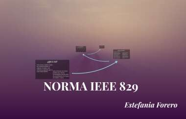

ISO 9001
La ISO 9001: es una norma ISO internacional elaborada por la Organización Internacional para la Estandarización (ISO) que se aplica a los Sistemas de Gestión de Calidad de organizaciones públicas y...
IEE
829
también conocido como el Estándar 829 para la documentación de prueba de software y sistema, era un estándar IEEE que especificaba la forma de un conjunto de documentos para su uso en ocho etapas definidas de prueba de software y prueba de sistema,
ISTQB
ISTQB® International Software Testing Qualifications Board (www.istqb.org), es una asociación sin fines de lucro (non-profit association) fundada en 2002. Su sede se encuentra en Bélgica y cuenta con constitución, normas y reglamentos.